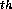

Sparse matrices, which are common in scientific applications, are matrices in which most elements are zero. To save space and running time it is critical to only store the nonzero elements. A standard representation of sparse matrices in sequential languages is to use an array with one element per row each of which contains a linked-list of the nonzero values in that row along with their column number. A similar representation can be used in parallel. In NESL a sparse matrix can be represented as a sequence of rows, each of which is a sequence of (column-number, value) pairs of the nonzero values in the row. The matrix
| A = |
|
A = [[(0, 2.0), (1, -1.0)],
[(0, -1.0), (1, 2.0), (2, -1.0)],
[(1, -1.0), (2, 2.0), (3, -1.0)],
[(2, -1.0), (3, 2.0)]]
where A is a nested sequence. This representation can be used
for matrices with arbitrary patterns of nonzero elements since each
subsequence can be of a different size.
A common operation on sparse matrices is to multiply them by a dense vector. In such an operation, the result is the dot-product of each sparse row of the matrix with the dense vector. The NESL code for taking the dot-product of a sparse row with a dense vector x is:
sum({v * x[i] : (i,v) in row});
This code takes each
index-value pair (i,v) in the sparse row, multiplies v
with the i 
value of x, and sums the results. The work and depth is easily calculated using the performance rules. If n is the number of non-zeros in the row, then the depth of the computation is the depth of the sum, which is O(log n), and the work is the sum of the work across the elements, which is O(n).The full code for multiplying a sparse matrix A represented as above by a dense vector x requires that we apply the above code to each row in parallel, which gives
This example has nested parallelism since there is parallelism both across the rows and within each row for the dot products. The total depth of the code is the maximum of the depth of the dot products, which is the logarithm of the size of the largest row. The total work is proportional to the total number of nonzero elements.